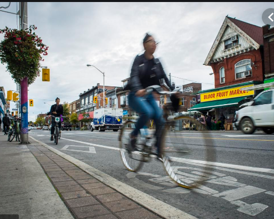

Los Robles Trail
submitted by Danny Keys
My buddies and I had heard about this trail in November from a friend who had finished the West portion earlier in the month. It sounded like a good trail, but we didn't have time to cheak it out until last week.
The Los Robles Trail winds from Potrero Road, just east of Wendy Drive in Newbury Park, to Foothill Drive near Fairview Road (near Hampshire Road in Westlake Village). A popular access point is at South Moorpark Road and Greenmeadow Avenue in Thousand Oaks.
Along with its many connecting trails (Triunfo Canyon Trail, Rosewood Trail, White Horse Canyon Trail, Los Padres Trail and more), awesome opportunities abound for hikers, bikers and equestrians to enjoy the open space.
Need a Rental?

you can register and signin and can book the cycles
Trail Reviews Rider Reviews
ojai Trails
Northridge Loop
posted on september17th 2019
TRAIL INFO
| trail type |
single track |
| elevation |
2000n |
| length |
14.5mil |
Comments
Max Smith wrote this on August 7th, 2014 at 12:52
Great review! I had a blast on the West side of the loop last week. I found a hidden gem in the old orchard field past the "lazy S" spur. If you keep going past the trail marker, you'll find a fantastic run through a dried up gulley-wash. Just stay clear of it on rainy days.